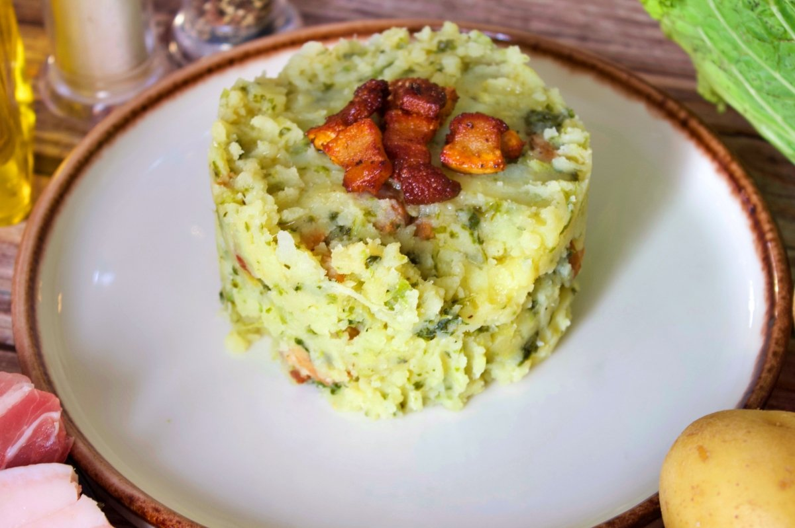

Talla en trossets la cansalada de i fregeix aquests trossets fins que comencin a daurar-se.
D'altra banda bat els 3 rovells d'ou amb l'ou i el formatge pecorino acabat de ratllar fins a fer una mescla una mica espessa. Dona-li uns tocs de pebre negre a aquesta mescla. Mentrestant, posa la pasta a coure en aigua abundant amb sal, i treu-la quan faltin un parell de minuts perquè estigui al dente.
En la paella on havíem reservat la cansalada viada o el guanciale saltat, agregarem la pasta escorreguda a la qual afegim la mescla d'ous, formatge i pebre, barrejant bé. Agreguem també un cullerot de l'aigua de cocció de la pasta.
Removem mentre es van integrant els diferents ingredients i es va fent una espècie de salsa en quallar lleugerament l'ou amb el brou calent de la cocció. Servim empolvorant d'una mica més de pecorino ratllat i donant un parell de voltes més de pebre molt.
Bistec
Ingredients
Carn(Bistec)
Sal
Mantega
Preparació
Calentem la paella i li posem la mantega.Esperem a que es desfagi i un cop desfeta introduim el bistec.
Introduim la sal i anem fent la carn al gust per cada costat.Un cop veiem que ja esta el retirarem de la paella
i l'emplatarem amb la guarnició al gust.
Paella
Ingredients
60 ml d'oli d'oliva
230 g de costelles de porc trossejades
170 g de pollastre trossejat
5 grams d'all sense pelar
70 g de fesols tendres
60 g de pebrot vermell en tires
3 grams d'all picats finament
1 tomàquet pera ratllat
1 culleradeta de pebre roig de la Vera
200 g d'arròs bomba
500-600 g de brou
1 branqueta de romaní
Preparació
Elaborem el brou daurant el pollastre i les costelles, afegim les hortalisses i el timó, i ho sofregim tot plegat. A continuació, hi afegim l’aigua, deixem bullir durant una hora i mitja, i ho colem. Condimentem amb sal i safrà. Per preparar la paella, daurem les costelles de porc i el pollastre juntament amb els grans d’all sense pelar. Tot seguit, hi incorporem les mongetes tendres, el pebrot vermell i els grans d’all picats, i ho sofregim bé. Afegim el tomàquet ratllat i el pebre roig de la Vera, i continuem amb el sofregit. Incorporem l’arròs bomba i el barregem bé amb el sofregit perquè s’integri. Aboquem el brou, ruixem amb una mica d’oli i hi posem la branqueta de romaní fresc. Deixem bullir uns minuts, abaixem el foc i continuem la cocció fins que l’arròs estigui al punt. Finalment, retirem la paella del foc, la cobrim uns minuts i la servim tot seguit.
Pizza
Ingredients
200 g de mozzarella
100 g de prosciutto
Rúcula fresca
Formatge parmesano en lascas
Oli de oliva virgen extra
Preparació
En un bol gran, dissol el llevat i el sucre en l'aigua tèbia i deixa reposar 10 minuts. Després agrega la farina, la sal i l'oli d'oliva, i mescla fins a formar una massa; pasta durant 10 minuts fins que estigui suau i elàstica,
cobreix-la i deixa que reposi una hora. Mentrestant, prepara la salsa: sofregeix lleugerament l'all en oli, afegeix el tomàquet triturat, sal, pebre i orenga, i cuina durant 10-15 minuts; retira l'all si el vas usar. Precalfa el forn a 250 °C o
la temperatura més alta possible, estira la massa en forma de disc, unta amb la salsa, i cobreix amb la mozzarella.
Enforna de 8 a 12 minuts fins que les vores estiguin daurades. En treure del forn, afegeix el prosciutto, la ruca, el parmesà en trosos si ho desitges i un raig d'oli d'oliva verge extra abans de servir.
Amanida Caprese
Ingredients
Tomaquet
Mozarella Fresca
Albahaca
Oli
Vinagre
Preparació
Rentem bé ho tomàquet i l'alfàbrega i els assequem con paper de cuina. Assequem també la bola de mozzarella per a facilitar-nos la labor de tallar-la en rodanxes. Por la seva part, a les fulles d'alfàbrega, les retirem el tallo perquè en l'amanida, estigui la part més saborosa solament. Tallem el tomàquet en rodanxes fines. Es preferible utilitzar tomàquets madurs i con molt sabor per a notar el contrasto dels ingredients. En un plat col·loquem una rodanxa de tomàquet i seguidament una rodanxa de mozzarella acaballada sobre ell. Sobre cada rodanxa de formatge mozzarella col·loquem una fulla d'alfàbrega. Repetim l'operació fins a tancar el cercle. Decorem con un cabdell d'alfàbrega en el centro.
Trinxat

Ingredients
Col
Patata
Cansalada
All
Aceite de oliva virgen extra
Preparació
Comencem pelant i trossejant les patates i la col. Posem les patates a coure en una cassola gran amb aigua i sal. Quan estiguin mitjà cuites, afegim la col i ho deixem bullir tot fins que estigui tot bién bullit. A continuació, les colem i les posar en una font profunda.
Amb un tenedero ho anem partint tot (trinxar) formant un puré uniforme. Pelem i laminem els grans d'all i els fregim en una paella amb oli. Els retirem, i en aquest mateix oli fregim la cansalada viada tallada en trossos, fins que estiguin ben cruixents. Retirem la cansalada viada de la paella i tirem l'oli sobre la mescla de col i patata.
Posem de nou la paella al foc i coem la mescla de col i patata pels dos costats, com si fos una truita. Emplatem repartint el trinxat en quatre plats, posem damunt els alls i la cansalada viada cruixent i servim immediatament.
Burger
Ingredients
500 g de carn
1 gra d'all
1 ou
Fulles d'alfàbrega fresca
Sal
Pebre negre acabat de moldre
Preparació
Treure la carn de la nevera mitja hora abans de començar a preparar-la.
Un cop passat aquest temps, barreja en un bol la carn picada, l’all ben picat i el rovell batut d’un ou (això farà que la carn quedi més esponjosa).
A aquesta barreja hi afegeixes unes fulles d’alfàbrega i la resta d’ingredients amb què vulguis farcir l’hamburguesa, com el formatge parmesà, verdures...
Barreja tots els ingredients pastant amb les mans fins que estiguin ben integrats.
Divideix la barreja en el nombre de porcions que vulguis i dona’ls forma amb un motlle d’emplatar o amb les mans.
Abans de posar les hamburgueses casolanes gourmet (Burger Meat) a la paella, afegeix la sal i el pebre negre.
Escalfa la paella amb dues culleradetes d’oli d’oliva i introdueix-hi les hamburgueses. El foc no ha d’estar massa alt per evitar que es facin per fora i quedin crues per dins.
L’ideal és que estiguin fetes cuinant cada costat només 3 minuts.
Truita de Patates
Ingredients
4 patates
4 ous
1 yema d'ou
2 cebes dolces
Oli d'oliva verge extra
Sal
Preparació
Comencem pelant i tallant les patates en làmines homogènies. D'aquesta manera, es pocharan de manera perfecta. Les posem en una paella amb oli que les cobreixi i deixem pochar a foc mig-baix durant uns 30 minuts, donant-li voltes de tant en tant perquè no s'enganxin. Un cop cuites, les retirem i reservem. Mentre tant, tallem la ceba en juliana fina i la pocharem en una paella amb oli i una mica de sal durant mitja hora. D'aquesta manera es farà lentament, alliberant els seus sucres i caramelitzant-se. Un cop tinguem la patata i la ceba a punt, retirem i reservem, col·locant tot l'oli sobrante. Batem els ous i la yema en un bol. Un truc és fer-ho amb una cullera perquè es bategi millor, ja que no introduïm aire com si ho féssim amb una forquilla. Un truc que em van ensenyar és, abans de barrejar la patata i l'ou, daurar la patata a foc fort en una paella. Afegim la patata a la mateixa paella, sense oli, per tal que algunes peces es daurin i li donin un toc genial. Ara barregem tot, corregim de sal i deixem reposar uns 5 minuts per assegurar que tot es mescli bé. Cuajem en una paella antiadherent per ambdós costats durant uns 45 segons. El temps dependrà de com t'agradi de cuajada la tortilla. Si t'agrada tova, amb aquests segons et serà suficient.